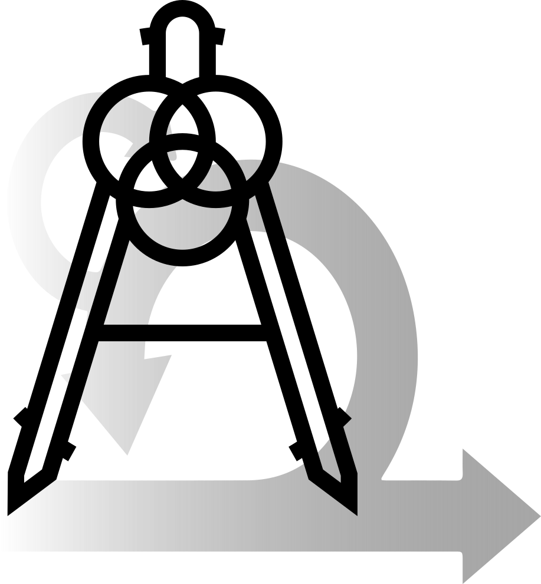

Agile
Architecture
# Agile Manifesto Principles
- Build projects around motivated, self-organizing and self-optimizing teams
- Communicate frequently, across domains, preferrably face-to-face
- Create a sustainable development environment
- Maximize the amount of work not done
- Continuously attend to technical excellence and good design
- Continuously deliver value-creating software frequently
- Welcome changing requirements
# Agile Core Focus
- People
- Feedback
- Adaptability
- Sustainability
# Agile pros
- Delivers value faster
- Cross-functional brings diverse perspectives
- People feel empowered
- Continuous and fast learning
# Agile cons
- Does not tackle change processes
- Seemingly simple, but requires experience to get it right
- Only short-term predictability
- Originally only small scale
# Architecture - Definition
> The fundamental concepts or properties of a system in its environment embodied in its elements, relationships, and in the principles of its design and evolution
> (ISO/IEC/IEEE 42010:2011)
> The structure of components, their interrelationships, and the principles and guidelines governing their design and evolution over time
> (TOGAF Standard 2018)
> The important stuff (whatever that is)
> (Martin Fowler)
# Architecture Focus
- Predictability
- Wholistic Optimization
# Architecture pros
- There's always an architecture, modeling makes it explicit
- Most valuable documentation if done well
- Allows reasoning in broader scopes
- Allows long-term predictions/reasoning/planning
# Architecture cons
- In terms of Lean, architecture is actually "waste"
- Unhelpful or even damaging if not updated
- "Ivory tower" architecture often far from reality
- Often found in rigid company structures and misused to control people
Agile

Architecture
Agile
Architecture
# Agile Architecture
- Combination of intentional and emergent architecture
- Borrows concepts from many successful approaches (Intentional Architecture, Agile, Lean, Value Engineering)
- Huge emphasis on the organization as a Complex Adaptive System
# Agile Architecture Axioms 1
- Customer experience
- [Axiom 1. Customer Experience Focus](https://pubs.opengroup.org/architecture/o-aa-standard-single/#_axiom_1_customer_experience_focus)
- [Axiom 2. Outside-In Thinking](https://pubs.opengroup.org/architecture/o-aa-standard-single/#_axiom_2_outside_in_thinking)
- [Axiom 4. Touchpoint Orchestration](https://pubs.opengroup.org/architecture/o-aa-standard-single/#_axiom_4_touchpoint_orchestration)
- Organization structure
- [Axiom 5. Value Stream Alignment](https://pubs.opengroup.org/architecture/o-aa-standard-single/#_axiom_5_value_stream_alignment)
- [Axiom 6. Autonomous Cross-Functional Teams](https://pubs.opengroup.org/architecture/o-aa-standard-single/#_axiom_6_autonomous_cross_functional_teams)
- [Axiom 7. Authority, Responsibility, and Accountability Distribution](https://pubs.opengroup.org/architecture/o-aa-standard-single/#_axiom_7_authority_responsibility_and_accountability_distribution)
- [Axiom 11. Partitioning Over Layering](https://pubs.opengroup.org/architecture/o-aa-standard-single/#_axiom_11_partitioning_over_layering)
- [Axiom 12. Organization Mirroring Architecture](https://pubs.opengroup.org/architecture/o-aa-standard-single/#inverse-conway)
- [Axiom 13. Organizational Leveling](https://pubs.opengroup.org/architecture/o-aa-standard-single/#_axiom_13_organizational_leveling)
- [Axiom 15. Project to Product Shift](https://pubs.opengroup.org/architecture/o-aa-standard-single/#_axiom_15_project_to_product_shift)
# Agile Architecture Axioms 2
- Software structure
- [Axiom 8. Loosely-Coupled Systems](https://pubs.opengroup.org/architecture/o-aa-standard-single/#_axiom_8_loosely_coupled_systems)
- [Axiom 9. Modular Data Platform](https://pubs.opengroup.org/architecture/o-aa-standard-single/#_axiom_9_modular_data_platform)
- [Axiom 10. Simple Common Operating Principles](https://pubs.opengroup.org/architecture/o-aa-standard-single/#_axiom_10_simple_common_operating_principles)
- [Axiom 16. Secure by Design](https://pubs.opengroup.org/architecture/o-aa-standard-single/#_axiom_16_secure_by_design)
- Agility
- [Axiom 3. Rapid Feedback Loops](https://pubs.opengroup.org/architecture/o-aa-standard-single/#_axiom_3_rapid_feedback_loops)
- [Axiom 14. Bias for Change](https://pubs.opengroup.org/architecture/o-aa-standard-single/#_axiom_14_bias_for_change)
# Agile Architecture Tools
- Inverse Conway Maneuver
- Set-Based Concurrent Engineering
- Minimum Security Architecture
- Architectural Decision Records
# Inverse Conway Maneuver
- Do value-stream mapping first
- Segment teams along individual value streams
- Give teams authority, responsibility and accountability
- Allows each part of the system to evolve as autonomously as possible
# Set-Based Concurrent Engineering
- Simultaneously explore multiple solutions for every sub-system
- Use rapid, low-cost analysis and tests
- Eliminate weak solutions
- Converge on a solution
# Minimum Security Architecture
- Start building and evolve your security architecture with the software
- Integrate with and stay in sync with DevOps
- Roll out changes to all teams and products
- Guide developers toward a secure Minimum Viable Product and set architectural direction
# Architectural Decision Records
- Decide if something is a [architecturally significant decision](https://pubs.opengroup.org/architecture/o-aa-standard-single/#architecture-decisions)
- Document significant decisions in a [standardized format](https://pubs.opengroup.org/architecture/o-aa-standard-single/#_architecture_decision_record)
# ADR Title
| What | Question |
|:--- |:--- |
| Status | What is the status: proposed, accepted, rejected, deprecated, superseded, etc.? |
| Context | What is the issue that is motivating this decision or change? |
| Decision | What is the change that is being proposed and/or being executed? |
| Decision scope | Which segments of the enterprise and its software systems are impacted? |
| Decision type | Is the decision easily reversible or not, and why? |
| Consequences | What becomes easier or more difficult to do because of this change? |
# Agile Architecture pros
- Focus on organization structure makes desired effects come about naturally
- Combination of best methods from other frameworks
- Proper authority/accountability cut empowers and motivates people
- Allows shifting between long-term planning and short-term work
# Agile Architecture cons
- Time will tell